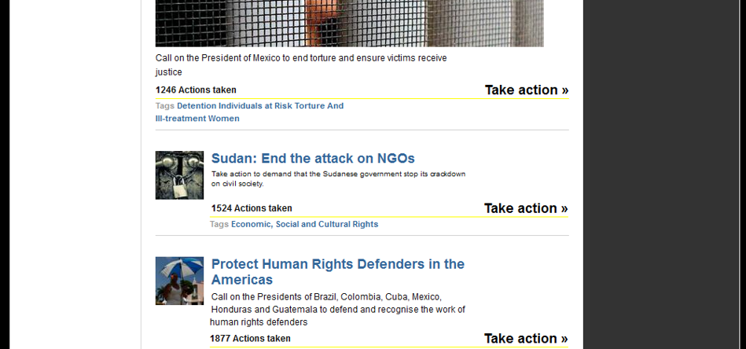

Lively, Dangerous Webs: Activism, Actancy, and Delivery in Digital Human Rights Rhetoric
Laura A. Sparks
California State University, Chico
(Published March 11, 2020)
Introduction
From human trafficking to genocide to police brutality, in our contemporary global landscape it seems atrocities of one kind or another are a constant. In the face of such a reality, by what means are we called upon to offer our support or agitate for change? Given shifts in digital technologies, including the instantaneity of social and news media, opportunities abound for engaging with both close and distant human rights issues. While researchers in human rights rhetoric and media have published extensively on witnessing, spectatorship, the circulation of images, and so on,1 they have paid less attention to digital delivery and its implications for activism. The delivery of these activist opportunities, I argue, depends on actants that cross digital and material domains.2
This essay seeks to understand human rights rhetoric as a dispersal of agency across a variety of digital and analog networks, media, and objects rather than as a restriction of agency to the classic humanist subject. From Jane Bennett’s treatment of “actancy” to Laurie Gries’ work on the circulation of digital objects, research in digital rhetoric and new materialisms increasingly complicates human-centered notions of delivery. I propose a new materialist approach to reading digital human rights rhetoric via an analysis of the digital outreach of Amnesty International (AI), an organization known for its work agitating for global causes. My analysis follows chronologically several noteworthy shifts, occurring between 2013 and 2018, in the AI web site’s development and promotion of a diverse human rights agenda. I take up Bennett’s theory of distributive agency, along with the work of digital rhetoric and media scholars, to consider the vibrancy of the digital activist networks produced and sustained in a web site like AI’s. In making the case for a more agentive and “vibrant” materiality, Bennett’s and others’ approaches lead to a number of questions about how materiality and activism intertwine, including: How are human rights issues “delivered” across digital networks? What forms of action do activism sites facilitate? What roles might human and non-human actants play in the network flows of information and activism? I find that digital delivery crucially relies on the participation of non-human actants, and that non-human forces meaningfully circumscribe and direct the possibilities for humans’ online activism.
It is important to acknowledge up front that contemplating the non-human or other-than-human in the context of human rights risks ignoring the humans whose lives are at stake. My emphasis on vibrant materials, in Bennett’s terms, does not mean to de-emphasize the lived experiences of people whose rights are violated in often-horrific ways, nor does it mean to direct attention away from the embodied practices so essential to our understanding of human rights rhetorics today. Indeed, important work like Karma R. Chávez’s “The Body: An Abstract and Actual Rhetorical Concept” and Wendy S. Hesford’s Spectacular Rhetorics highlight the ways in which bodies—particularly those in marginalized groups—figure significantly in human rights activism, 3 and underscore the ongoing risk of violence against human bodies. In concert with those approaches, my intention here is to consider the arguably undertheorized role of the non-human across established and growing human rights networks, in hopes that such attention will help us better theorize delivery and address the rhetorics of human rights in times of enduring crisis. That is to say, a full and ethical consideration of human rights activism should also attend to the ways in which we work within distributed networks of non-human actants.4 Elizabeth Losh highlights a similar concern in “Hashtag #Euromaidan: What Counts as Political Speech on Instagram?”, asserting, “the relationship between the body that can be counted and the body that can be harmed is central to the cultural imaginaries of revolution in the age of computational media and digital networks . . . ”At stake in human rights activists’ relation to other human bodies are intervening and participatory technologies, from an organization’s smartphone application to a web site’s embedded Twitter feed. Bodies are enmeshed in digital activist networks, and we would be well-served to attend to the forces that co-create those lively, dangerous webs.
In addition, I note at the outset that my aim is not to make specific recommendations for human rights advocacy, especially as we might imagine success to take any number of different forms. Some term social-media activism “slacktivism”; the United Nations, for example, as recounted in the UNAIDS Outlook Report, defines “slacktivists” as people who “support a cause by performing simple measures” but “are not truly engaged or devoted to making a change” (143).5 And yet, in our digital networked world, the internet remains central to how we deliver human rights news and causes, coordinate actions, and so on. I am less interested in measuring individuals’ devotion to a cause than in understanding how users’ participation relies on non-human actants. Indeed, such a focus on individual intention or devotion misses entirely the networked assemblage within which humans act; as I discuss in later examples, even our capacity for measuring human engagement relies on those same digital technologies. With rapid shifts in both technology and human rights needs, it is beyond the scope of this project to make the case for a singular approach to digital activism. Instead, I argue we should better understand the rhetorical forms these digital invitations-to-activism might take.
In the following sections, I first trace three related, and often intertwined, areas of scholarship that frame my attention to the non-human: theories of delivery, digital rhetoric, and new materialisms. I then turn to a series of web examples from AI’s site. If we recognize rhetorical action as deeply intertwined with the material world, I find we must also recognize the persuasive nature of non-human things and begin charting the threads of their entanglements.
“Active Texts” in Digital Delivery and New Materialisms
This brief overview of digital delivery and its relationship to new materialisms posits an enriched understanding of delivery that accounts for our embeddedness among other-than-human things. I take up Colin Gifford Brooke’s call to work “in the middle space” (15) by exploring the role of the material and other actants in delivering human rights activism. Delivery matters because it is the canon through which we understand audiences to take up the rhetor’s enunciation; and in digital spaces, including in contexts related to human rights activism, this “taking up” not only happens in the midst of, but is also in many ways beholden to, assemblages of non-human actants.6
Rhetorical delivery has long been a site where interlocutors must contend with new and changing media, but changing digital technologies also afford opportunities for rethinking what we mean by “delivery.” Delivery, Ben McCorkle notes, is where “given technologies of writing and communication (chirography, print, television, hypertext) enter the cultural sphere” (3). McCorkle links our attention to elements beyond the human speaker to epistemological shifts in the field that have re-centered notions of subjectivity, theorizing that “[i]n the absence of a performing human body, the media forms stand as avatars in its stead, applying shape, color, and texture to the content of a given text” (8). McCorkle observes that scholars over the last quarter century recognize delivery in the largely nonverbal “surrogate bodies of texts” (140). While he implicitly laments shifts beyond the human in his reference to “surrogate texts,” such recognition invites us to think beyond “surrogacy” as a term for understanding non-human actors. Recent scholarship on rhetorical delivery includes attention to the vehicle by which language is delivered (even if, as I emphasize here, that vehicle is non-human).7 For example, Collin Gifford Brooke refigures delivery in terms of performance, a move which is helpful for moving beyond the “transitive, instrumental process of transmission” (177) characterizing earlier understandings of delivery, but which might move still further beyond the humanist subject.
Building on such advances in delivery, I advocate for more attunement to less discernable forces, like algorithms or codes,8 that impact delivery’s shapes and forms. If we recognize rhetorical delivery as distributed across networks beyond the speaker/subject, we are called to also consider how our world-stuffs make delivery possible within a variety of affordances and constraints. Such work is consistent with recent research in circulation studies that attends to how “bodies, artifacts, words, pictures, and other things flow within and across cultures to affect meaningful change” (Gries and Brooke). Gries’ scholarship on iconographic tracking, an innovative digital research method useful for tracking images’ circulation, underscores that scholars must “better account for how digital technologies, participatory media platforms, and various actor-networks contribute to the circulation and transformation of things in both digital and physical realms” (“Iconographic Tracking” 335). I am interested particularly in what attention to theories of actancy and rhetoric help us understand about how “things become agentive and vital as they engage in various activities” (Gries and Brooke). My work, however, resists clear distinctions between delivery and circulation, in that I find a robust approach to digital delivery attends meaningfully to the non-human.
A new materialist analysis suggests the extent to which digital relations are enmeshed with non-human actants. Such a framework shifts the emphasis towards distributive agency, “running alongside and inside humans” (Bennett viii), so to speak. Arguing that rhetoric is implicated in more than just the actions and desires of speakers, Thomas Rickert proposes an “ambient rhetoric” (xvi) that understands rhetoric as of the world and attendant to ways of being in the world. Rickert’s conception of rhetoric as calling for some action and doing so in a way that reveals the world differently (29), is essential to recognizing the activity at work in digital delivery. If we conceptualize rhetoric as not simply worldly but as “an emergent result of environmentally situated and interactive engagements […] that persuades us prior to symbolicity” (34), we must acknowledge rhetoric’s material and embodied dimensions, as well as its reliance on human and non-human interaction. This very notion of “prior-ness” requires us to consider the contributions of other-than-human forces. And those relations are less about persuasion than, as Rickert says, world-making. What is being delivered is not persuasion, per se, but a world.
What might it mean to consider the vibrancy or force of a cursor’s movement or the click of a mouse? The anticipatory vitality of an embedded link? In digital realms, the text is not merely a passive screen for user activities; as James Porter says of discourse, in his work on delivery, there exists the potential “for a life of its own” (11). We should also then recognize possibilities for a multi-directional and interactional form of delivery. Considering rhetorical delivery in terms of interactivity, in particular, allows for a reconceptualization of the relationship between human and object, and, in the case studies below, between site visitor and web text/s. Media researchers Laura Gurak and Smiljana Antonijevic describe interactivity as a central component of the web, for Internet users are “expected to interact with information” (500). But for this to be “an active two-way exchange,” it follows that the information must interact back. As research in new media observes, web forms function with a kind of movement; what some have dubbed “interactivity,” others call “oscillation” (Bolter 105). Rather than emphasizing web texts’ fluidity, for example, Jay David Bolter frames these shifts in control between reader and author as revealing “joints” and “ruptures” (106). In that sense, interactivity, or oscillation, requires not only active authors/creators and readers/viewers but also active texts. Estee Beck finds, “algorithms and computer code are rhetorical in that algorithms facilitate and function in complex acts of information exchange and retrieval across human life domains of thought and action.” It is the text or system itself that stimulates and engages with users. Attending to interactivity and engagement in terms of new materialisms allows a reorientation of agency in digital advocacy contexts away from individual actors and toward vital enmeshment.
Like nodes in a circuit, these points of intersection generate forms of interactivity not only between individuals but between systems. Jane Bennett’s and Kevin Kelly’s work underscore the ways in which digital engagement relies on a shifting, provisional assemblage of non-human things that operate in sometimes-unrecognizable forms. Kelly, in What Technology Wants, hones in on the generative potential, the want, operating within systems. He calls our technological system the technium, recognizing the ways in which technology seems to function as a “self-reinforcing system of creation” (12). Kelly recognizes a force that, while anthropomorphized in his own descriptions, nevertheless opens up to exceed human potential. In this generative series of “feedback loops and complex interactions,” the technium, “spawn[s] a bit of independence. It [begins] to exercise some autonomy” (12). 9 Like nodes in circuit, these points of intersection generate forms of interactivity not simply between users but between systems. Put another way, technology’s imperative, its “growth dynamic” (173), operates largely independently of human desires, however much we aim to harness it towards our own ends.
Bennett’s research, too, complicates the idea of clearly isolatable “objects” serving human capacities. While she acknowledges in Vibrant Matter the vitality of less tangible things, especially interesting is what her notion of vital materialities brings to the conversation about web-based delivery. Examples early in her book include a dead rat and a bottle cap (4-5), but what about that which is intangible? She writes that the term “thing-power… tends to overstate the thinginess or fixed stability of materiality,” and her goal, instead, is to “theorize a materiality that is as much force as entity, as much energy as matter, as much intensity as extension” (20). Later, in her discussion of an “activeness that is not quite bodily and not quite spatial,” Bennett remarks that “[t]his vibratory vitality precedes, or subsists within, or is simply otherwise than, formed bodies” (55). This recognition of a “vibratory vitality” is especially useful for scholars thinking about objects/things that are not necessarily boundaried or visible to the naked eye and resonates compellingly with Kelly’s interest in the “kind of force [that flows] through technology” (8). While Bennett’s choice of terms emphasizes a liveliness, over Kelly’s more human-centric “information,” both researchers share a sense of the limitations of materially bound forms for understanding the non-human.
Research in delivery, media, and new materialisms invites us to consider non-human participation in digital networks, including those in which diverse human rights agendas are delivered to users across the globe. The new materialist perspective I espouse here highlights the interconnectedness of activists, digital media, and vulnerable populations, refusing to identify agency with any one actor or group. To more fully think through implications for human rights activism, I turn next to a series of examples from Amnesty International’s web site spanning five years, 2013-2018.
Web Activism and Amnesty International: Examples from 2013-2018
Amnesty International (AI), a London-based non-governmental organization (NGO), is heavily invested in using web texts to promote shared interests and create and sustain opportunities for action. Founded in 1961, AI is explicitly concerned with human rights violations, though its focus is less on humanitarian aid than on activism and issues of legal justice.10 Openly critical of many local and international governing bodies, it serves as a useful site for study because of its clear activist agenda, its emphasis on the United Nations’ Universal Declaration of Human Rights, and its long-term investment in online petitions and similar forms of activism. More politically radical than other longstanding organizations like the International Committee for the Red Cross, and with a historical emphasis on mass letter-writing campaigns, AI uses its web presence to promote provocative models of activism and visitor engagement. Because AI’s scope is international, a particular site visitor might encounter a geographically distant cause; thus “the diffusion of media” and “the construction of virtual realities and digital activism” render activism deeply visible and accessible to millions (Hesford 18). The web site “delivers” information about atrocities and other human rights crises to an international audience, including an estimated 7 million AI members and supporters (“Amnesty”).
The site facilitates user participation largely on a visual level. Human rights work, as others have argued, relies heavily on visibility and access to information. In her research on human rights spectacles, Hesford positions “discourses of vision and modes of visuality” (20) as central to human rights law and advocacy. In asking visitors to engage by tweeting, following links and reading, downloading articles and posters, donating money, and so on, AI delivers an interactive visual space for facilitating users’ involvement with pressing human rights issues.
But AI’s web operations function amidst a variety of constraints and flows. As part of digital landscapes, they are subject to power fluctuations, the limitations of server space, coding changes, shifting social media patterns, technological upgrades, as well as creative and practical design choices, market and governmental forces, and audience demands. In what follows, I consider four moments in the AI web site’s development, all of which speak in some ways to the mutability of hypertexts and their embeddedness, participation even, in the activities of site visitors.
2013: The “Activism Center”
The “Activism Center,” rendered in a 2013+ version of the site, drove users’ engagement with particular causes by inviting petition signatures via taps or mouse clicks. From the link “Take Action” on the right side of the home page, underneath “Donate” and “Join,” AI’s site directed visitors to the Activism Center, a digital space “where you can take action to help end human rights violations around the globe” and “discover how you can make a difference.” In this digital space, however, “taking action” was not about volunteer opportunities in the field. Rather, advocacy supported by the site’s ubiquitous “Take Action” links included signing online petitions and writing messages. Other suggested activities included receiving “updates on Amnesty International campaigns.” The page listed those causes in need of immediate action, suggesting a kind ubiquity of opportunity. One line suggested that action-takers “[c]all on the President of Mexico to end torture and ensure victims receive justice,” for example. Other recommended causes included the Sudanese government’s “attack on NGOs” and Italy’s “discriminatory draft law.” The bottom of the page was divided into two sections: “Recent appeals doing well,” underscored by a green line, and “Actions in need of support,” with a red line. This distinction separated out causes by their levels of success (see fig. 1) and used algorithms to both track petition signatures and explicitly direct visitors’ engagement.
Figure 1. Screenshot from www.amnesty.org/en/activism-center/, 2 April 2013.
And yet, while web designer intentions are surely at play, we should also understand these digital logics by way of the network of forces engendering user response. To imagine technologies and objects as participants in acts of delivery is to ascribe to them a capacity for co-production; it also suggests the possibility for action. Bennett describes an “intention” as “a pebble thrown into a pond, or an electric current sent through a wire or neural network” (32)—movement through or towards. The site’s algorithm, in this case, determined in real time which appeals were “doing well” and which were “in need of support,”—not an individual human intelligence curating lists. In her research on algorithms and persuasion, Beck explains:
When data inputs into the structure of the algorithm, a type of transactional invention occurs, where for a moment, the spatial, temporal, and lingual dimensions of the data, algorithm, and circuits come, in some sense, [a]live—or live, thus performing ritualized and routine acts for the processing and exchange of information. (“A Theory”)
For Beck, these “transactional inventions” highlight the reciprocal nature of algorithmic behavior and the human-non human relationships within which algorithms operate. In the context of the 2013 Activism Center, we see the digital “center” as a key player in not only delivering activist opportunities, such as they were, but also delivering engagement and interaction back into the system.
The distinction lower down the web page (between those causes in need of more support and those doing well) also implied that each cause deserved the same level of attention, that they were equal in urgency and significance, and that any difference in degrees of support ought to be resolved. The distribution of possible “actions” made visible what kinds of participation were possible. Actions were thus discrete; they had clear parameters, and they were not sustained opportunities for engagement, but were rather completed through timely intervention. Site users were not encouraged to see a particular problem as persisting over time or as wrapped up with other problems, but rather as solvable or addressable through individual and collective action.
Users could determine the efficacy of their activities only through the site algorithm’s numerical tally, whereby multiple highly visible counting mechanisms tracked visitors’ efforts. Below its brief description, each listed cause included a number identifying how many visitor actions had been taken in support of that appeal. On the right sidebar, directly across from the Center’s introductory paragraph, the page also included a large, bright yellow counter, tallying the total number of actions taken (see fig. 2). Once a single action had been taken, the numbers rose, such that users were treated to an immediate and quantifiable result of their behavior. A user’s activities increased the total number, but the number’s high visibility suggests that these contributions necessarily relied on an identification with others, as well as a relationship to the site itself. Visitors were not simply communicating to a particular government about a pressing issue but also communicating implicitly with like-minded activists—and even more interestingly, communicating with the activism hub itself.
Figure 2. Screenshot from www.amnesty.org/en/activism-center/, 2 April 2013.
Viewers performed discrete, countable actions, with the “counting” and “sharing” aspects serving as immediate rewards. The hub offered a digital space through which the prescribed actions could be taken and then provided numerical evidence that visitors had contributed something recognizable and significant. In what was a potentially fleeting, distanced form of participation in AI’s human rights program, visitors could still identify as activists who performed a concrete act against injustice. And through this digitally quantified process, visitors were encouraged to see their efforts as part of a global digital network of action-takers.11
“Taking action” thus functioned as a communicative act between user and system by dint of the increasing, but never satisfied, tally. The rhetorical labor involved in these “symbolic actions” manifested through aggregate virtual activity. The distinction at the bottom of the page between “Recent appeals doing well,” in green, and “Actions in need of support,” in red, created and sustained an ever-present sense of fulfillment and lack—visitors had just accomplished something important, but the need continued. The site itself sustained this cycle of urgency, for there were always already causes “in the red.” And, like the counting mechanism, these color categories were determined algorithmically. The activism hub is particularly interesting here in how it implicitly defined “action” and related “actions” to forms of interactivity. Because none of the suggested actions (signing a petition, sending a pre-written letter, etc.) required visitors to leave their digital devices, any potential interactions were on the level of interface. This delivery mechanism invited a visitor to simply move down the page clicking on “Take action” (see fig. 3). The infinite numerical collation drove further actions, while seeming to offer immediate proof of these actions’ success. While a “slacktivist” lens might note the limitations of this movement on the level of the individual user, a more capacious reading highlights these small actions’ embeddedness within a rich, distributed network The counting mechanism reinforced the aggregate nature of this form of digital activism—one email to a nation’s government may not prompt change, but perhaps thousands of emails would—making the digital delivery less about individual actions or even the populations whose rights were at stake than about what the network and humans collectively contributed. Put another way, each visitor’s experience of activism was mediated not only by the organization but also by the site itself.
2013: Hashtags & Social Media
The use of embedded social media feeds, typically for Twitter and Facebook, offer additional opportunities for recognizing the human-non human assemblage that shifts the terms of possibility for human rights activism. Social media feeds can be embedded into a particular web page to show up-to-the-minute remarks on a wide range of topics and encourage visitors to promote the site or organization from their own social media accounts. From an academic’s blog to a site like AI’s, there is persuasive power in showing oneself to be a participant in ongoing conversations. Because embedded feeds bridge multiple sites, visitors’ engagement with one another and with the organization is productively dispersed across digital domains, while interactivity is simultaneously positioned within the frame of a single web site.

Figure 3. Screenshot from www.amnesty.org/en/activism-center/, 2 April 2013.
Amnesty International’s home page featured for some time a hashtag-based feed of tweets in which the organization or one of its chosen campaigns was mentioned. These mentions appeared in real time, including both date and time stamps. In 2013, for example, the hashtag #RomaRights was featured, so any tweets with that hashtag would appear on AI’s site. Visitors to a particular organization’s web page were thus exposed not only to its content but also to an embedded and simultaneous feed of user and/or organization-produced content from elsewhere (see fig. 4). The emergence of a feed based in metadata (hashtags) suggested the success of this particular strand within the media ecology. Rather than being a passive conduit, the hashtag here assembled and organized, constructing a visual regime reminiscent of the curated lists of appeals in the Activism Center. Avatars, rather than separate causes, took up space, re-centering viewers’ attention on user action. The intertextual nature of such feeds created explicit linkages or co-references between users’ social networking sites and the organization’s site, such that visitors were prompted to recognize human rights conversations as ongoing and partially diffuse.
Figure 4. Screenshot from www.amnesty.org/, 16 April 2013.
In 2018, rather than embedded feeds, injunctions to “Tweet for us,” “Follow us,” and “Share our story” emerged—each request invoking popular social media platforms and enjoining site visitors to become nodes within the activist network, but using a different visual display. Those connections rely on non-human participants and conduits, not merely in terms of platforms but even in renderings of posts and messages. As Bennett explains, an actant “never acts alone”; its “efficacy or agency always depends on the collaboration, cooperation, or interactive interference of many bodies and forces” (21). In asking visitors to actively promote its message, AI renders digital distribution a form of activism itself. As the user touches the screen or clicks the keyboard, the assemblage of technologies and forces inputs information into the network, making the human activist inseparable from the technologies required for participation. By harnessing social media in activism sites, human rights organizations encourage site visitors to imagine, and thus create, themselves as part of this ongoing and interactive assemblage.
2011-2016: AiCandle
As the Activism Center and embedded social media examples indicate, maintaining an active network of supporters requires making site visitors part of the everyday process of providing aid. The assemblage thus moves beyond the web site itself. Apps and other social media play a crucial role in redirecting possibilities for digital activism from the organization’s site toward adjacent devices, networks, and communities. For example, from 2011-2016, AI supported a mobile app called “AiCandle.” Its tagline read “Human rights in your hands” and the images on AI’s web site depicted an iPhone displaying a more realistic version of the organization’s stylized icon: a candle wrapped in barbed wire (see fig. 5 and fig. 6). Unlike the embedded social media feed, in which user participation was imported to inside the site itself, the mobile app created a digital place for activism closer to home, identifiable by its own icon on a handheld device. With AiCandle, supporters would be able to share human rights-related news and actions with friends, as well as take part in Amnesty’s campaigns.
Under the headline “Be an activist,” the AI site explained to potential users that the AiCandle app facilitated meaningful actions on behalf of a range of international campaigns. Each of the suggested actions began with active verbs, such as “hold corporations accountable,” “protect women’s rights,” and “persuade governments to change their laws and practices,” emphasizing the active forms of advocacy enabled by the app. The app’s name and opening image invoked the candlelight vigils that are regular features of memorials and activist events, implicitly rendering the app user into a participant, a supporter holding up a candle. In downloading the app, site visitors were invited to become participant-consumers in a human rights economy that extended the activist network into a specific location in everyday digital life.
Figure 5. Screenshot from www.amnesty.org/en/aicandle (no longer available), 29 April 2014.
Figure 6. Screenshot from http://osocio.org/message/new-aicandle-20-the-iphone-app-from-amnesty-international/, 25 April 2018.
However, the app was not merely a tool for action but, like its users, a kind of participant. The digital candle delivered a simulacrum of the familiar human rights-related action of holding a candle in protest, mourning, and support, but the app’s resonance was also in its distributed nature. For digital human rights advocacy, we see that the timeliness, the immediacy, promised by widespread access to human rights concerns can be compromised by interruptions beyond human control. While potential activists were called take human rights into their hands, so to speak, these technologies seemed at times to resist such circuits of influence. For example, as multiple app reviewers noted, sometimes the app ran slowly, or the candle refused to light up or flicker, and at other times, the candle was the only part of the app that worked (“AiCandle”). The app’s failures here highlight the ways in which such tools are not neutral conduits or invisible pathways for human activity; rather the failures call attention to the app’s thinginess—its quirks and oddities, its ability to exceed human expectation, design, or direction. Following Brooke’s observation that “new media provide us with objects that are not stable” (14), we might recognize the ephemerality of the digital candle; its bugs, interruptions, and failures to light are reminiscent of both familiar technological glitches and actual flames. This digital breeze, so to speak, reflects the AiCandle’s independence from human action or even desire; the candle “burns” (or not) independent from human match-lighting activity.
The AI app’s emergent qualities were part of the flux and flow of other forces, from wireless signals, to the size and feel of handheld devices, to the iconic app symbol that stood in for the codes we could neither see nor touch, to cumbersome iPhone updates, to the app icon’s arrangement among a slew of other icons. The app attempted to, in Hesford’s terms, “bring distant human rights and humanitarian crises into an interactive personal space” (18), fostering an interactivity that also relied heavily on our relationships to our mobile devices. The digital candle was thus not merely a “performance” of activism but, following the logic of Rickert’s “ambient rhetoric,” it constituted the creation of a kind of environment that depended on this app feature—a move ultimately fleeting, given its tendency to glitch and its eventual retirement. Delivery is not purely an effect of human efforts—rather, as Bennett reminds us in the context of the non-human, there is a “confederate agency of many striving macro-microactants” (23). The app “delivered” news and causes to a user’s phone, but that user’s signature on petitions, notes of support, tweets and Facebook posts, and so on, all contributed to an interactive digital delivery in which the app and its attendant forces played a pivotal role. Deep in these social activist networks is a generative mobility at work that relies heavily non-human actants.
2016-2018: Changes in the Web Interface
Numerous web design experts, from developers to aficionados, note how changes in web styles have also shifted viewers’ orientation to web texts. Rather than featuring a “news”-style interface, as was initially popular, the 2016-and-later AI web site greets visitors with large, even screen-filling photographs and minimal (though substantially-sized) accompanying text. While links are still visible, the sheer height of AI’s latest site invites scrolling to access new information. It is as if the site is one long feed. The 2016 page featured few vertical divisions in favor of large horizontal sections characterized by massive background images.12 (“Page” even seems like a misnomer, given that the fold has been unfolded.) The relationship between text and graphics has changed, as well. Horizontal divisions in the 2016 to 2018 version require viewers to scroll beyond the initial background image/s to a trio of graphic symbols and text on white space, inviting viewers to temporally evaluate their own human rights commitments: “Have a minute?” the first asks. “Have an hour?” “Have longer?” (see fig. 7).
Figure 7. Screenshot from www.amnesty.org/en/get-involved, 18 April 2018.
From the perspective of digital delivery, such changes are significant not simply because the content modules, or delivery systems, look different and affect human behavior. Rather, changes in the interface shift the distribution of agency and even responsibility. Note the difference between the 2013 screenshot (fig. 8) and this one from 2016 (fig. 9):
Figure 8. Screenshot from www.amnesty.org/, 16 April 2013.
Figure 9. Screenshot from www.amnesty.org/, 24 February 2016.
Images that span web pages, almost entirely filling up users’ screens, demand a different kind of looking—viewers’ eyes are given fewer items on which to settle. Jacques Rancière explains in The Emancipated Spectator:
Emancipation starts when we dismiss the opposition between looking and acting and understand that the distribution of the visible itself is part of the configuration of domination and subjection. It starts when we realize that looking is also an action that confirms or modifies that distribution, and that ‘interpreting the world’ is already a means of transforming it, or reconfiguring it. (277)
Rancière’s approach to emancipation denies any neutrality to the act of looking.13 He further suggests, however, that “looking” can be active, if not transformative.14 In human rights rhetoric, images’ digital circulation and subsequent accessibility in the public sphere have remained issues of concern, and we are right to continue questioning the ethics of distribution. With concerns of voyeurism, unethical exposure, objectification, and spectacularization in the mix,15 a tension persists between the import of viewing photographs of atrocity and the potential for re-victimization of those depicted. Such visual exposure can also circulate outside the ethical intentions of advocates.16 There is an ethical responsibility entailed in seeing, and the technologies producing—pixelating, even—visuals participate in that distribution.
Indeed, the actants in this updated interface ask different things of viewers. As I noted above, what just a few years ago functioned using embedded links to social networks now encourages movement primarily outwards through tweeting or sharing; engagement and participation blur together. We see both a new relationship to site content and a new kind of movement: from tapping or clicking to scrolling. Bennett’s theory of distributive agency “does not posit a subject as the root cause of an effect” (31), however, so it would be unfair to claim that the change is uni-directional. Shifts in web design that favor scrolling reflect developers’ responses to the changing nature of humans’ technology use. The growing prevalence of touchscreen hand-held devices, as well as the upsurge in mobile sites that make better use of smaller screens, render traditionally sized web pages less vital and dissuade developers from including heavy linking requirements. It is, after all, so much easier to swipe than to click.
The move toward taller page design might also be understood as a shift in choice-making. In his oft-cited BuzzFeed article, “Why Twitter Just Turned Itself Inside Out,” John Herrman implicitly likens clicks to doors, noting that “Favorite, Reply, and Retweet buttons are [now] displayed between all tweets. You no longer have to open a tweet, or swipe it, to interact with it — you just tap on the action you want to take. Twitter’s doors are now wide open. You could say there are no more doors at all.” He further explains:
If there’s one lesson to take from every major change in how people browse the internet over the last five years — the rise of infinite feeds, the gradual retirement of slideshows and pagination, the explosion of very tall, vertically interactive page layouts — it’s that users hate to click and don’t mind scrolling. Taps are expensive, swiping is cheap. Clicking is a choice, like jumping; scrolling is inevitable, like falling.
What does it mean that users apparently prefer scrolling to clicking? Or that social media campaigns are not embedded in as much as spread outward? As I acknowledged at the outset, it is beyond the scope of this essay to offer specific design recommendations. One way to understand the impact of these changes, however, is to consider how users are compelled to act, impact, or speak back to, the interface. Scrolling certainly implies a kind of passivity, and regular smartphone and/or tablet users are no doubt familiar with the habitual nature of using their fingers—thumbs, especially—to scroll down a smooth screen of a handheld device. While clicking means a potentially dramatic shift from one page to another, scrolling means a shift in space, across what we might figure as a long expanse of flat text—a “scroll.” Scrolling down a long web page can be almost compulsive, our actions determined, then, by default.
Conclusion
We know from delivery’s historical associations with hand gestures, shifts in countenance, and other embodied actions that delivery has long been linked with movement of a kind. But delivery entails more than a performance or presentation; delivery also involves co-participants, in the sense that delivery requires reception, and ultimately a “taking up.” It would be fair to argue that an ethical human rights enterprise offers multiple possibilities for taking up, rather than a narrow or prescribed avenue to intervention or care. At the same time, in our digitally networked world, rhetoric is distributed beyond human goals or intentions, making activism an increasingly interactive and co-determined process. So what might be the implications for human rights work, as activists look to both be conscious users of digital media and resist the spectacularization Hesford aptly identifies? For starters, we would be wise to consider how participants are invited to understand their relationships to others. In a graduate course I teach on human rights rhetorics, we discuss in depth the “savior complex” and paternalism that are indelibly intertwined with primarily white, Western human rights activism. Just as increased globalization allows for broader awareness of abuses, these networks of understanding must also direct resources and attention towards local activist groups and operate at multiple levels to support the goals of particular populations. What this means for individual action is not fully parsed, but I contend that recognizing the digital materials involved in those efforts is a meaningful component of that process.
As digital interfaces proscribe myriad possibilities for engagement, we are called to recognize how digital delivery relies also on the fluid distribution of forces through and beyond the human. In considering delivery beyond the speaker, I continue to urge a re-orientation to digital human rights activism in light of our growing understanding of these material rhetorics. It is important that the rhetoric of new media “prepare[s] us as writers to make our own choices” (Brooke 15, emphasis in original). Just as importantly, however, I argue it should attend to how the work makes choices. If we, as we should, trouble the notion of digital technologies as neutral or inherently equitable, we must also attend to the ways particular technologies act with, or even in spite of, human striving.
Notes
1 See, for example, Wendy Hesford’s Spectacular Rhetorics, W.J.T. Mitchell’s Cloning Terror, and Sharon Sliwinski’s Human Rights in Camera.
2 While I situate my work most fully in the new materialist tradition, I use the terms “material,” “actant,” “non-human object,” and occasionally “other-than-human” to refer to the range of nodes—some more concrete or visible than others—that characterize the dynamic interplay of digital human rights activisms.
3 As Wendy Hesford explores in Spectacular Rhetorics, “visual media’s rhetorical force” (192) is simultaneously subject to cooptation and capable of rupturing the “objectifying gaze” (19). Her extensive work on the Abu Ghraib images demonstrates the complexities rife in the circulation and consumption of photographs depicting atrocities and problematizes rhetoric’s discursive and performative role. Growing attention to rhetoric and the material world offers additional insight into understanding how particular environments and conditions work on and with human subjects.
4 Elaine Scarry, for example, implies as much in her seminal monograph The Body in Pain, in which she argues persuasively for attention to the role of objects in world-making and -unmaking.
5 See also the UNICEF campaign, “Unicef Criticizes Facebook Slacktivism.”
6 Along related lines, James Porter advocates rethinking the fifth canon in terms of techne, “making,” or creation, in concert with non-human technologies. He proposes a series of topoi to guide digital writing and suggests in “Recovering Delivery for Digital Rhetoric” that contemporary digital scholars theorize delivery in terms of techne, or the “matter of bringing form to material in order to make something” (210). This emphasis on “making” revises our understanding of delivery not simply in favor of the human actor once again, but also in favor of technologies (in this case, web-based) as participants in the process of creation.
7 Feminist recovery work, such as Lindal Buchanan’s Regendering Delivery, finds that—while certainly key to our understanding of delivery—body, voice, and expression are insufficient for recognizing rhetorical delivery as “a socially situated act” (3), with its own constraints, affordances, and audience expectations that must be negotiated. This attention to delivery beyond expression or gesture remains significant for our understanding of how rhetorical practice is invented and negotiated, as well as the cultural networks within which rhetoric circulates.
8 See, for example, Estee Beck’s recent work in enculturation, in which she argues for recognizing algorithms as “language objects” and “quasi-rhetorical agents with persuasive abilities.”
9 One notable example is that of the telephone system. Mathematicians have found that telephone messages which a century ago once dispersed across the network “in a pattern… [associated] with randomness” now resemble “self-organized systems,” specifically the fractal pattern. Kelly is careful to note that this doesn’t “prove autonomy,” but he nevertheless suggests that such independence can be “self-evident” before it is proved (Kelly 14).
10 For a more in-depth analysis of Amnesty International’s history and its novel approach to alleviating human rights violations, I highly recommend Jonathan Power’s 2001 book, Like Water on Stone: The Story of Amnesty International.
11 It is worth noting that these and other site “actions” produce metadata that serve the organization’s purposes of tracking users’ participation and engagement.
12 While the Amnesty International homepage is approximately three screen lengths tall, that of the International Committee for Red Cross boasts a not-inconsiderable eight screen lengths.
13 For more on using visuals to initiate affective responses, see, for instance, David Sheridan, et al.’s “Kairos and New Media: Toward a Theory and Practice of Visual Activism.”
14 Roland Barthes’ “punctum” in Camera Lucida implies that, rather simply being looked at, images can interact with us, creating sometimes-intimate spatial and temporal folds. Memory and what Barthes conceives of as an accidental juxtaposition (i.e., not by the photographer’s design) can pierce the viewer into a kind of recognition of mortality. We are struck by images.
15 For more on visibility and the role of the spectacle/spectacular in human rights rhetorics, see also Wendy Hesford’s Spectacular Rhetorics. Hesford introduces the crisis of witnessing to question whether “violent representations [are] necessary for the construction of social and legal recognition” (99).
16 In “Torture Culture,” Dora Apel notes similarities between widely circulated lynching postcards and the Abu Ghraib images, suggesting that through such visual representations, torture becomes a commodity that serves a political function. Apel implicitly locates the images as part of a visual economy that participates in, if not produces, power relations.
Works Cited
“AiCandle reviews.” SensorTower, 25 April 2018, www.sensortower.com/ios/us/amnesty-international/app/aicandle/334420214/overview.
Amnesty International. www.amnesty.org/, 2013-2018.
Apel, Dora. “Torture Culture: Lynching Photographs and the Images of Abu Ghraib.” Art Journal, vol. 64, no. 2, 2005, pp. 88-100.
Barthes, Roland. Camera Lucida: Reflections on Photography. Translated by Richard Howard, Farrar, Strauss, and Giroux, 1981.
Beck, Estee. “A Theory of Persuasive Computer Algorithms for Rhetorical Code Studies.” enculturation, A Journal of Rhetoric, Writing, and Culture, no. 23, 22 Nov. 2016, www.enculturation.net/a-theory-of-persuasive-computer-algorithms.
Bennett, Jane. Vibrant Matter: A Political Ecology of Things, Duke UP, 2009.
Bolter, Jay David. “Hypertext and the Rhetorical Canons.” Rhetorical Memory and Delivery, edited by John Frederick Reynolds, Lawrence Erlbaum, 1993, pp. 97-111.
Brooke, Collin Gifford. Lingua Fracta: Toward a Rhetoric of New Media. Hampton Press, 2009. New Dimensions in Computers and Composition.
Buchanan, Lindal. Regendering Delivery: The Fifth Canon and Antebellum Women Rhetors. Southern Illionois UP, 2005.
Chávez, Karma R. “The Body: An Abstract and Actual Rhetorical Concept.” Rhetoric Society Quarterly, vol. 48, no. 3, Dec. 2018, pp. 242-50.
Gries, Laurie E. and Collin Gifford Brooke, editors. Circulation, Writing, and Rhetoric, Utah State UP, 2018.
Gries, Laurie E. “Iconographic Tracking: A Digital Research Method for Visual Rhetoric and Circulation Studies.” Computers & Composition, vol. 30, no. 4, Dec. 2013, pp.332-348.
--.Still Life with Rhetoric: A New Materialist Approach for Visual Rhetorics, Utah State UP, 2015.
Herrman, John. “Why Twitter Just Turned Itself Inside Out.” BuzzFeed, 29 Oct. 2013, www.buzzfeed.com/jwherrman/why-twitter-just-turned-itself-inside-out?utm_term=.wxZkEKpWX#.ycBlkvObx.
Hesford, Wendy S. Spectacular Rhetorics: Human Rights Visions, Recognitions, Feminisms. Duke UP, 2011.
Kelly, Kevin. What Technology Wants. Viking, 2010.
Losh, Elizabeth. “Hashtag #Euromaidan: What Counts as Political Speech on Instagram?” The Exceptional & The Everyday: 144 Hours in Kiev, Feb. 2014, www.the-everyday.net/p/essay.html.
McCorkle, Ben. Rhetorical Delivery as Technological Discourse: A Cross-Historical Study. SIUP, 2012.
Mitchell, W.J.T. Cloning Terror: The War of Images, 9/11 to the Present. U of Chicago P, 2011.
Porter, James E. “Recovering Delivery for Digital Rhetoric.” Computers and Composition, vol. 26, no. 4, Dec. 2009, pp. 207-224.
Rancière, Jacques. The Emancipated Spectator. Translated by Gregory Elliott, Verso, 2009.
Rickert, Thomas. Ambient Rhetoric: The Attunements of Rhetorical Being. U of Pittsburgh P, 2013.
Scarry, Elaine. The Body in Pain: The Making and Unmaking of the World. Oxford UP, 1985.
Sheridan, David, et al. “Kairos and New Media: Toward a Theory and Practice of Visual Activism.” enculturation, vol. 6, 2009, http://enculturation.net/6.2/sheridan-michel-ridolfo.
Sliwinski, Sharon. Human Rights in Camera. U of Chicago P, 2011.
UNAIDS Outlook Report. Stylus Pub., 2010. Google Books.